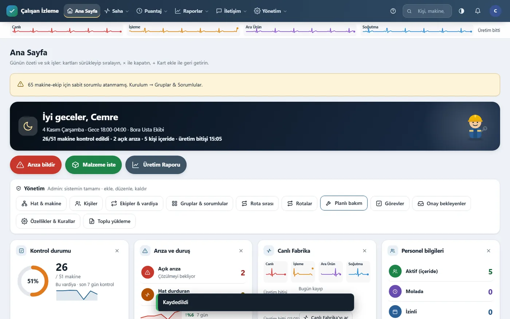
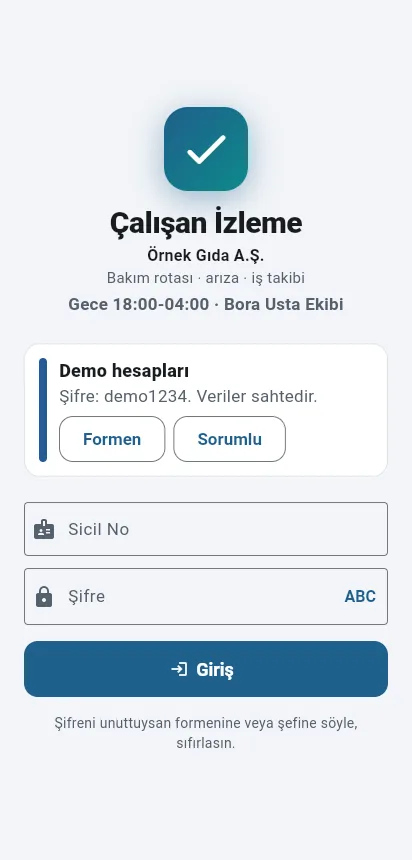

Çalışan İzleme
Fabrika bakım yazılımıASP.NET Core 8, SQLite, Flutter (Android ve web), düz JS yönetim paneliDepo özel, isteyene ekranda gösteririm
Sahadaki ekip telefondan kontrol, arıza ve iş kaydı girer; şef ve yönetici panelden duruşu ve kaybı izler.
Sorun. Kâğıt form, kaybolan vardiya bilgisi ve "bu arıza neden tekrar etti?" sorusuna cevap verememek.
Yaptığım. Telefon internetsiz kayıt alır, ağ gelince tekrarsız gönderir. Sunucu tesisin kendi bilgisayarında çalışır; bulut, CDN ve telemetri yok, veri dışarı çıkmaz. Kayıtlar değiştirilemez bir olay defterine yazılır ve hash zinciriyle doğrulanır. Beş rol (Admin, Yönetici, Şef, Formen, Sorumlu) var ve yetkiler sunucuda denetlenir.
Sonuç. 338 xUnit testi, 0 başarısız; bugün tekrar koşturdum. Tek komutla, 3 aylık sahte geçmişi olan bir demo ayağa kalkıyor.

